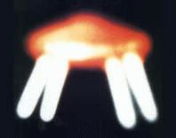

A Saint Hilaire-du-Rosier, 2 témoins voient pendant 20 mn un
phénomène orange ovale, avec à son centre un cercle d'une couleur rouge intense "Une section de recherche sur les ovnis à Saint-Marcellin", Le Dauphiné Libéré, 20 mai 1974.
A Montmorency (Val d'oise), un ovoïde bien plus grand qu'un
avion stationne immobile pendant 2 h Gazette du Val d'Oise, 16 juillet 1997.
au 3 militaires de l'unité du capitaine C., commandant de l'escadron
82 de la gendarmerie mobile d'Hyères (Var), aperçoivent, vers la ferme de l'Hôpital, une
forme lumineuse de faibles dimensions. Cette lumière suit la patrouille dans ses déplacements jusqu'à la Cavalerie,
variant de taille en fonction de l'heure et de la position, ou elle est observée par plusieurs officiers et
sous-officiers de l'escadron. Bourret, Jean-Claude: Le Nouveau défi des ovnis, 1976, p. 61].
M. D. roule au volant de sa 2 CV dans la région de Tarbes.
Il est supris par une lueur rouge : J'ai aperçu sur ma droite (...) à environ 400 ou 500 m une boule de
couleur rouge orange de la grosseur du soleil. Je pense que cette boule était assez haut au-dessus du sol, sans
pouvoir préciser. Elle se déplaçait en direction de Rabasten vers le nord tout en se rapprochant de ma voiture.
(...) Cette boule s'est trouvée un moment face à mon véhicule. (...) A ce moment-là, elle a pris une forme plus
ovale, comme un ballon de rugby. Cette boule éclairait tellement, devant et autour de moi, que je voyais comme
en plein jour. Pendant qu'elle se trouvait à la hauteur de ma voiture, celle-ci ne tirait plus, elle avait des
ratés, elle n'avançait pas malgré mon accélération - et ceci sur une cinquantaine de mètres au moins. Lorsque
cette boule a pour ainsi dire tourné devant moi sur la nationale 21 (N 21), elle avait perdu un peu d'altitude
tout en gardant toujours la même couleur, mais cette boule devenait de plus en plus grande, c'est-à-dire qu'elle
devait atteindre 2 m de diamètre. Je n'ai perçu aucun bruit (...). J'ai eu très peur. (...) J'ajoute que (...)
j'en ai aperçu une deuxième, plus petite, d'un rouge vif. Elle se tenait à peu près à la même hauteur que la
première. De ces boules me venaient une très puissante lumière et des rayons qui m'éblouissaient. Les yeux
de M. D. seront rouges et larmoyants pendant 2 jours. Plusieurs témoins ont aperçu cette nuit-là dans la région
de puissantes lumières ou des boules lumineuses.
Sur France Inter, Bourret interviewe Jean-Claude Ribes, alors
radioastronome et chargé de recherches au CNRSBourret 1976.
A la Motte Fanjas près de Saint-Nazaire-en-Royans, 1 témoin
observe 1 énorme cigare stationné à 3 m du sol, qui le suit ensuite alors qu'il est en voiture. Lorsqu'il arrive à
son domicile le phénomène disparaît en se matérialisant en énorme disque "Une section de recherche sur les ovnis à Saint-Marcellin", Le Dauphiné Libéré, 20 mai 1974.
Aux Etats-Unis se tient une réunion de scientifiques, universitaires intéressés par le phénomène ovni. Claude Poher est au Etats-Unis à cette époque Bourret 1976.
Cliché pris à Albiosc le 23

Sur France Inter, Bourret formule une conclusion de sa série d'entretiens sur les
ovnis, aux côtés de Claude Villers. Michel Monnerie y annonce que LDLN organise une soirée de surveillance du ciel national pour le
lendemain Bourret: 1976.
Début de la soirée de surveillance du ciel national, organisée par LDLN. Malgré la publicité autour de l'opération, aucune photo n'est
envoyée à l'émission Bourret: 1976.
Le cliché ci-contre est pris à Albiosc (Var ou Vosges?). Il aurait été plus tard
déposé sur le pare-brise du journaliste Jean Bedet, avec un mot indiquant la date et le lieu de du cliché, qui
aurait été pris par un médecin (désirant rester anonyme) alors qu'il rentrait tard sur une route de campagne
après une visite à un patient LDLN n° 138, 1974-10, pp. 22-24 Hermann Bauer Vzerlag: Das Geheimnis der unbekannten Flugobjekte, Freiburg, 1976, traduit A. Schneider-H. Malthaner: Le Dossier Secret des O.V.N.I., Ed. De Vecchi, 1978.Michel Figuet suspectera Jean Bedet d'être lui-même à l'origine de ce canular.
Lancement de Saliout 3. Elle retombera l'année suivante.